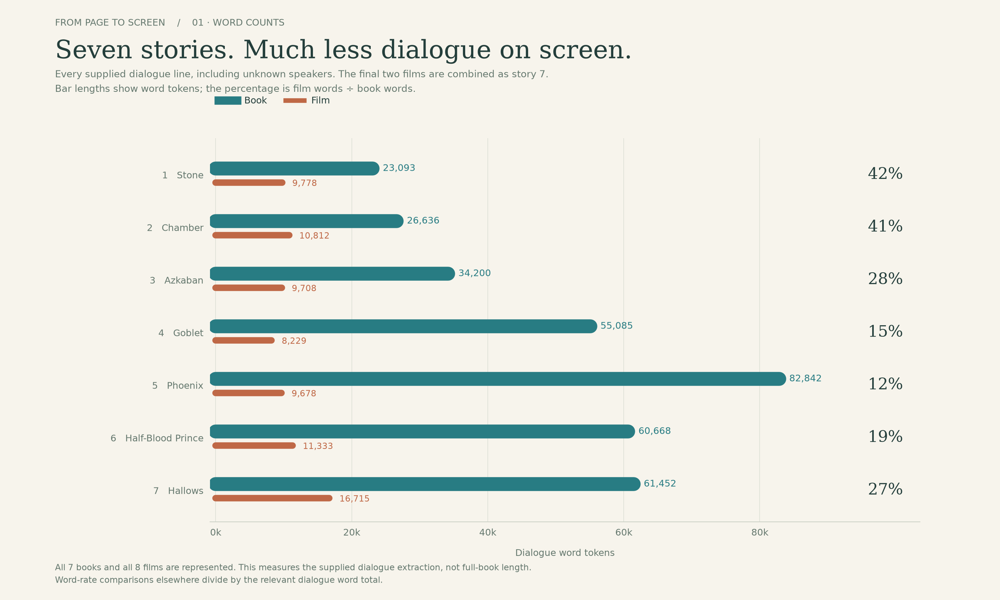
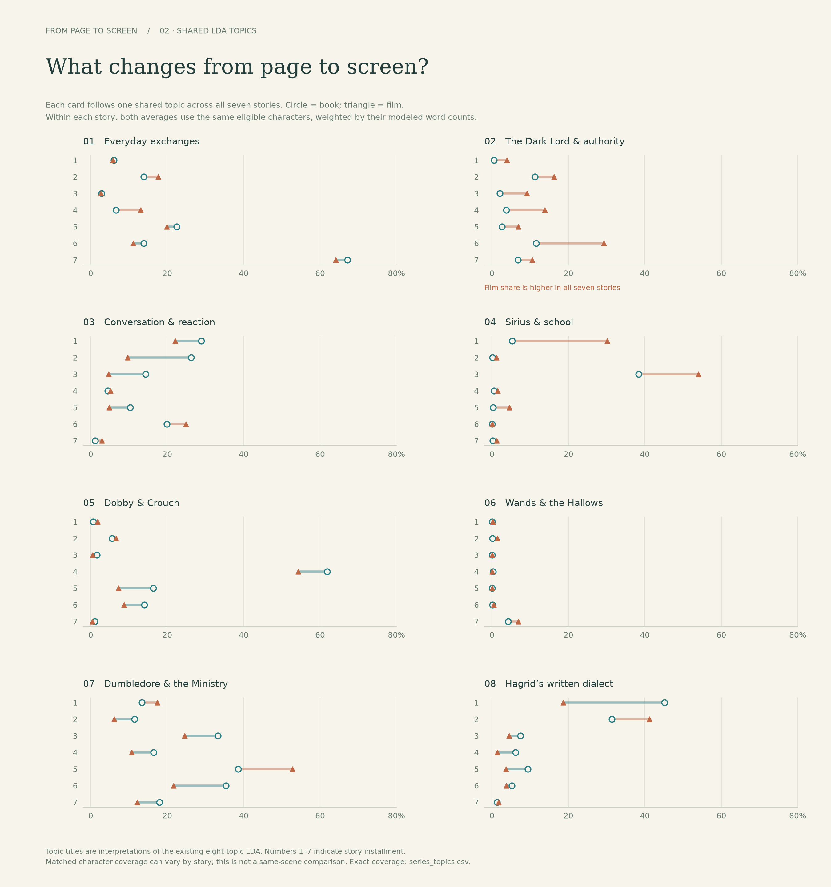
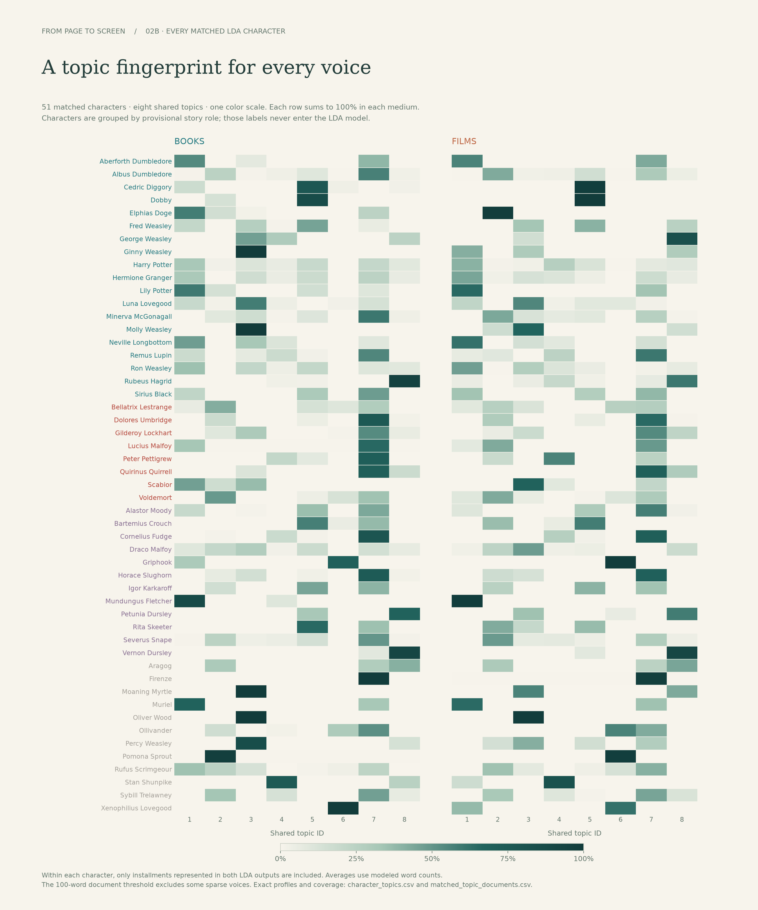
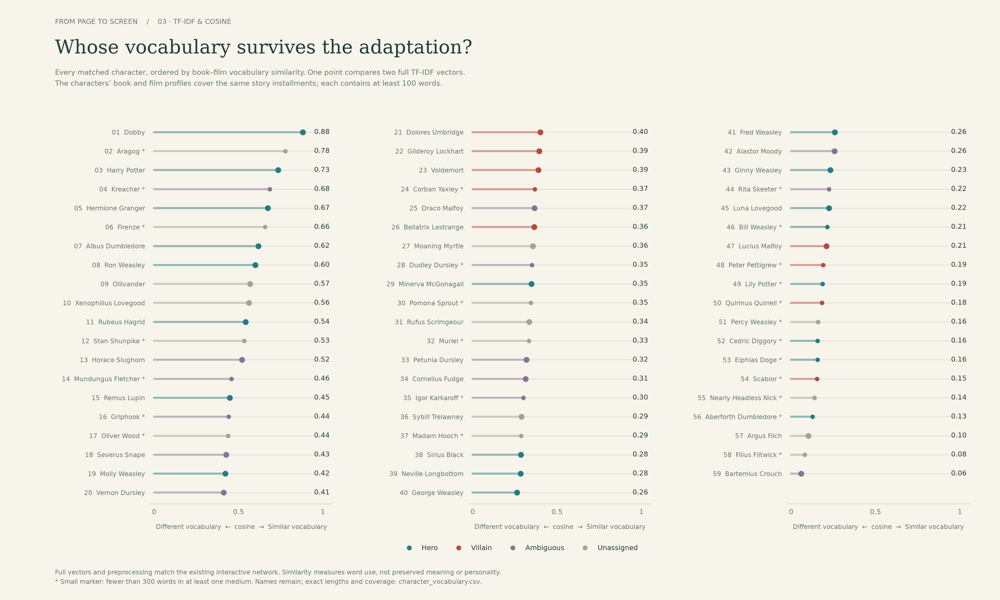
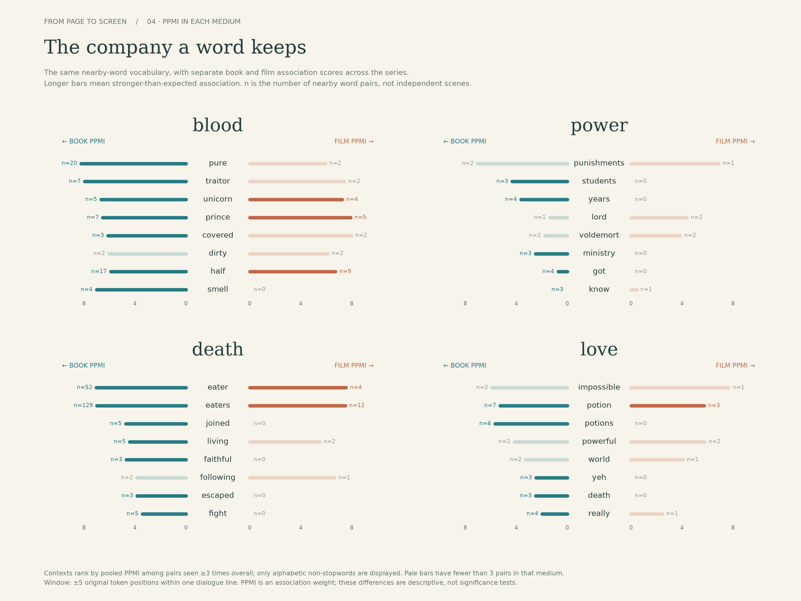
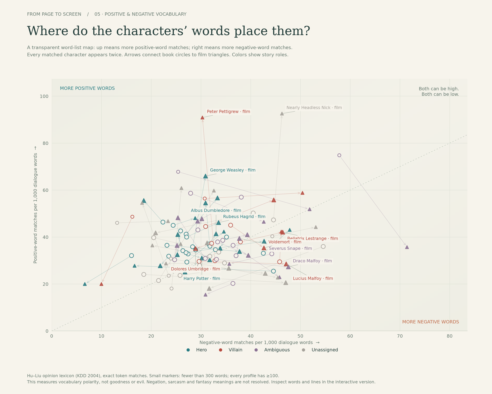

01 / Word counts
Seven stories, two dialogue budgets
All seven books and eight films. Compare the amount of attributed dialogue before interpreting changes in vocabulary.

Harry Potter / books & films
A series-wide collection of word counts, shared topics, vocabulary similarities and word contexts, followed by a transparent positive/negative vocabulary map.
Explore the character word map → Explore the vocabulary network →Explore spell language →Methods, coverage & results
All stories contribute. Character comparisons use matched installments and minimum word thresholds, so sparse or unmatched voices are excluded and listed in the data. Word polarity measures vocabulary; it does not assign moral character. Earlier Umbridge figures remain available as case studies.
01 / Word counts
All seven books and eight films. Compare the amount of attributed dialogue before interpreting changes in vocabulary.

02 / LDA
Eight shared topics across every story. Book and film averages match characters within each installment.

02B / LDA
All 51 characters with matched LDA documents. Topic fingerprints use one color scale and shared topic IDs.

03 / TF-IDF
All 59 matched characters, ranked by full-vector cosine similarity. No character is selected for having a striking result.

04 / PPMI
Books and films now have separate context matrices. Shared vocabulary, five-word windows and visible pair counts.

05 / Word-list polarity
Positive and negative word densities for all 59 character pairs. Story roles supply colors; measured words supply coordinates.

Each image has a corresponding CSV in this folder. The original datasets and the earlier LDA, TF-IDF, PPMI and interactive network are preserved.